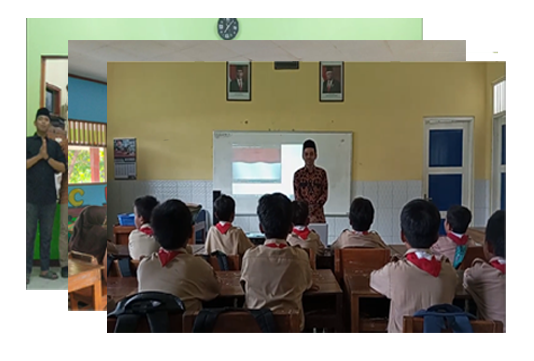

Edukasi Berkualitas
Berkomitmen untuk dapat memberikan ilmu dan pengetahuan yang terbaik bagi para peserta didik serta membentuk karakter peserta didik menjadi manusia yang berguna dan bermanfaat bagi bangsa dan berusaha mengembangkan potensi dan bakat peserta didik secara optimal.